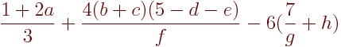

Los operadores se utilizan para manipular datos. Los hay de varios tipos: de asignación, aritméticos, lógicos y de manipulación de bits.
Este operador ya lo hemos visto en apartados anteriores. Se utiliza para asignar un valor a una variable.
Algunos ejemplos de uso:
int a, b, c; // Declaramos las variables
a = 10; // Asignamos el valor "10" a la variable "a"
a = b = c = 5; // Asignamos el valor "5" a todas las variables
a = b; // Asignamos a "b" el dato contenido en "a"
a = b = c; // Asignamos a "a" y "b" el dato de "c"
C soporta las siguientes operaciones aritméticas:
| Operador | Descripción | Uso | Ejemplo |
|---|---|---|---|
+ |
Suma | var1 + var2 |
2 + 3 -> 5 |
- |
Resta | var1 - var2 |
2 - 3 -> -1 |
* |
Multiplicación | var1 * var2 |
2 * 3 -> 6 |
/ |
División | var1 / var2 |
8 / 4 -> 2 |
% |
Resto | var1 % var2 |
9 % 2 -> 1 |
Para hacer operaciones aritméicas, como la siguiente:

Tendrás que escribir(1+2*a)/3 + (4*(b+c)*(5-d-e))/f - 6*(7/g+h) sin omitir el símbolo de multiplicación *.
Son operadores de asignación que se componen con aritméticos para abreviar la sentencia. Estos son:
| Operador | Uso | Descripción | Ejemplo |
|---|---|---|---|
= |
var = expr |
asigna valor | x = 5 |
+= |
var += expr |
var = var + expr |
x += 5 |
-= |
var -= expr |
var = var - expr |
x -= 5 |
*= |
var *= expr |
var = var * expr |
x *= 5 |
/= |
var /= expr |
var = var / expr |
x /= 5 |
%= |
var %= expr |
var = var % expr |
x %= 5 |
Operadores que incrementan/decrementan la variable en una unidad.
| Operador | Uso | Descripción | Ejemplo (x=5) |
|---|---|---|---|
++ |
x++ ó ++x |
x += 1 |
x++; -> 6 |
-- |
x-- ó --x |
x -= 1 |
x--; -> 4 |
Los operadores relacionales se utilizan para comparar dos valores antes de decidir la acción a tomar.
Estos funcionan devolviendo 1, equilavente a true, en caso de que se cumpla la relación establecido o 0, equivalente a false, en caso de que no se cumpliese.
Los operadores son:
| Operador | Descripción | Uso | Ejemplo (x=5, y=3) |
|---|---|---|---|
== |
Igual a | expr1 == expr2 |
x == y -> 0 |
!= |
No es igual a | expr1 != expr2 |
x != y -> 1 |
> |
Mayor a | expr1 > expr2 |
x > y -> 1 |
>= |
Mayor o igual a | expr1 >= expr2 |
x >= y -> 1 |
< |
Menor a | expr1 < expr2 |
x < y -> 0 |
<= |
Menor o igual a | expr1 <= expr2 |
x <= y -> 0 |
Estos operadores comprueban un serie de expresiones y, en función de si estas son ciertas o falsas, devuelve un 0 o un 1.
| Operador | Descripción | Uso | Ejemplo (x=0, y=1) |
|---|---|---|---|
&& |
Lógica AND | expr1 && expr2 |
x && y -> 0 |
| || | Lógica OR | expr1 || expr2 |
x || y -> 1 |
! |
Lógica NOT | expr1 && expr2 |
x && y -> 1 |
&& |
Lógica XOR | expr1 && expr2 |
x && y -> 0 |
Escribe una aplicación que pregunte tres números enteros al usuario y los guarde en las variables X, Y, Z. Entonces devuelva:
X + Y, X + Y + Z, Z - Y - X.X / Y y el resto de la división.